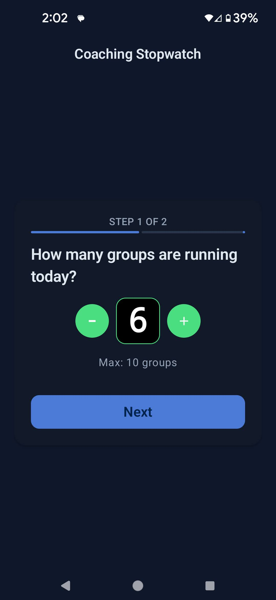
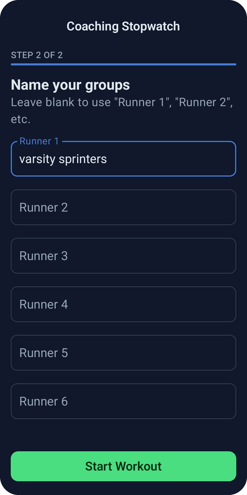
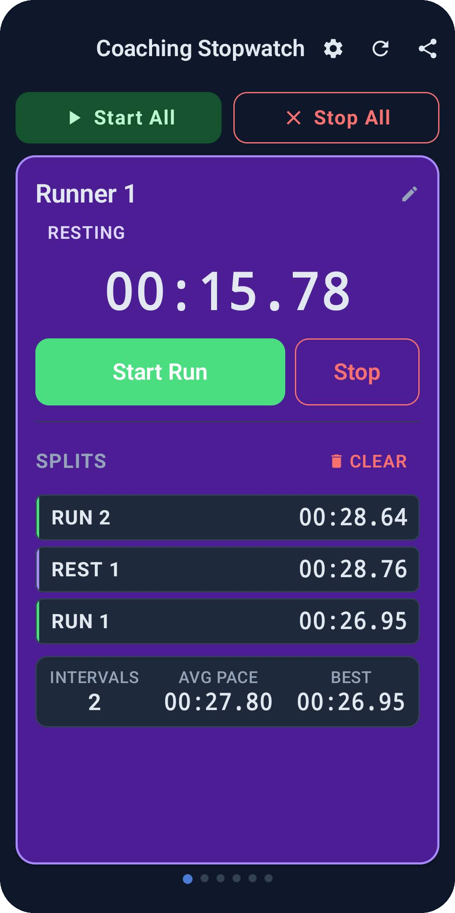

Every runner/group.
Every split.
One Device.
Coaching Stopwatch runs up to ten independent timers side by side, so you can time run and rest intervals for a whole practice group without juggling stopwatches or a clipboard.
Built for the person holding the stopwatch
Track and field coaches, running coaches, and PE teachers use Coaching Stopwatch for fartlek sessions, circuits, relay practice, or any workout where several groups need their own run and rest times recorded and reviewed later — not just watched once and forgotten.
Set up before the group even lines up

Choose your group count
Set anywhere from 1 to 10 runners or groups for the session. That's the only number you need to decide before practice starts.

Name your runners
Label each timer — "Varsity Sprinters," "Lane 3," an athlete's name — or leave it blank and Coaching Stopwatch defaults to Runner 1, Runner 2, and on.

Tap to switch, tap to save
Tap a timer to start the run, tap again to switch to rest. Every switch is logged with its type and time, building a full split history right on screen — use Start All and Stop All when you want the whole group in sync.
What you get on top of the timers
1–10 independent timers
Each runner or group runs on its own clock. Nothing has to move in lockstep unless you tell it to.
Full split history
Every RUN and REST interval is saved with its time, so you can review the whole session per runner, not just the last split.
CSV export
Export runner, type, and time to a CSV and share it by email, Drive, or any app — opens straight into Excel or Google Sheets.
Runs in the background
Lock your phone or switch apps and timers keep going, with a small ongoing notification so you know they're still live.
Phone and tablet layouts
Swipe between runners one at a time on a phone, or watch every timer at once in a grid on a tablet.
No account, no ads
Open it and start timing. Nothing to sign into, nothing interrupting your stopwatch mid-practice.
Why this exists
"As a track coach, I got tired of running several stopwatches by hand and copying times onto a clipboard after practice. Coaching Stopwatch is the tool I wanted for myself — independent timers for every group, and a CSV at the end so the numbers are actually usable." — Brock Hammill, teacher and coach
Questions coaches ask
How many runners can I track at once?
Up to 10 independent timers in a single session, each with its own run/rest state and split history.
Does it need an account or an internet connection?
No. There's no sign-in, and the app doesn't need a network connection to time your practice.
What's actually in the CSV export?
Three columns — Runner, Type (RUN or REST), and Time — for every interval in the session, ready to open in Excel or Google Sheets.
Will it keep timing if I lock my phone?
Yes. Timers keep running in the background, with a small ongoing notification confirming they're still active.
Does it cost anything?
No. Coaching Stopwatch is free, with no ads getting between you and the stopwatch.
Get it before your next practice
Free download, no account required, ready to use the moment your first group lines up.